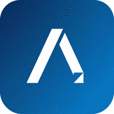

You are offline
Adomin Invoices could not reach the server. Everything you opened before is still readable — new invoices and PDFs need a connection.
Try againRetrying automatically…
- Free hosting sleeps when idle — the first request can take a minute to wake up.
- Documents you sent with a link stay readable from this cache.